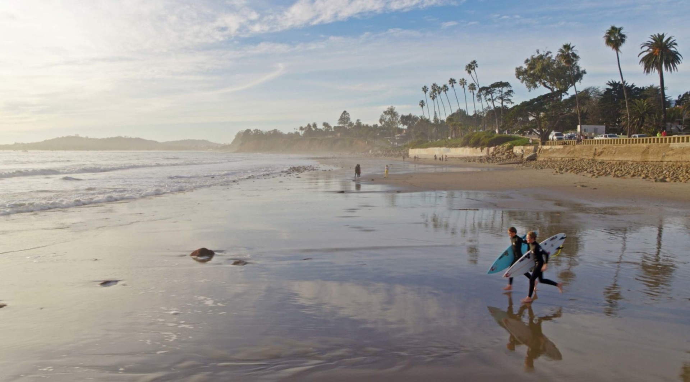

SANTA BARBARA
From the beautiful beaches to the award winning restaurants, there are no shortage of things to do in Santa Barbara. Let's look at some of my favorite things Santa Barbara has to offer!

Beaches
Santa Barbara has some of the most beauiful beaches in California. One of my personal favorites is Butterfly beach, in Montecito, the southern most area of Santa Barbara. East and West beach are located near the pier and harbor, which are some of the best tourist locations to check out
Hiking
If you’re an outdoorsy person, Santa Barbara is perfect for you! Located between the mountains and the ocean, Santa Barbara is geographically diverse, having every activity you could want to participate in. My favorite hiking trail is hotsprings, also in montecito, which leads you to naturally warm pools, which are incredibly fun to hang out with friends in.

Restaurants
Santa Barbara has countless fantastic restaurants ranging from Mexican to Italian, to american. There is no shortage of great food. One of my favorite places to eat is the Public market, which has over 10 different restaurants under one roof. Here are my top 5 favorite restaurants:
Night Life
Like the food scene, Santa Barbara also has a vibrant nightlife scene. Lower State St. lights up on the weekend. Bars line the street, and restaurants close much later, letting you grab a quick bite after you’ve had a couple drinks. There’s an area nearby called the “Funk Zone” that’s full of wineries and breweries. It’s a very artsy area great for a chill Sunday or a date night. Some great places to check out are:
- The Red Piano
- SohO
- Rodeo Room
- Sand Bar
- EOS Lounge
- Whiskey Richards
- Santa Barbara Wine Collective